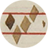

<!-- Navigation -->
<nav class="navbar navbar-expand-lg navbar-light fixed-top" id="mainNav">
    <a class="navbar-brand" href="/">
       
       <div id="navTitle">Measuring Polyphony</div>
       <div id="navDescription">Digital encodings of late medieval music</div>
       <div class="clearfix"></div>
    </a>
    <!--<button class="navbar-toggler navbar-toggler-right" type="button" data-toggle="collapse" data-target="#navbarResponsive" aria-controls="navbarResponsive" aria-expanded="false" aria-label="Toggle navigation">
      Menu
      <i class="fa fa-bars"></i>
    </button>
    <div class="collapse navbar-collapse" id="navbarResponsive">
      <ul class="navbar-nav ml-auto">
        <li class="nav-item">
          <a id="browse" class="nav-link " href="transcriptions.html">Browse</a>
        </li>
        <li class="nav-item">
          <a id="about" class="nav-link js-scroll-trigger" href="#about">About</a>
        </li>
      </ul>
    </div>-->
</nav>

<header id="displayHead" class="transhead">
    <div id="transcriptionHeader">
        <h1 id="title">{{documentTitle}}</h1>
        <p id="composer">{{composer}}</p>
    </div>
</header>

<div id="editor-container">
    <app-diva-view></app-diva-view>
</div>
